Selección y variedad
Productos de res, cerdo y pollo para respaldar menús diversos y necesidades específicas de operación.

Solicitar cotizaciónCanal profesional · Puerto Vallarta
Abasto cárnico confiable para hoteles, resorts y restaurantes que no pueden comprometer frescura, consistencia ni puntualidad.
Soluciones para foodservice
Cuando cada plato representa a tu marca, necesitas un proveedor que entienda la presión de una cocina profesional.
Carnes Supremas combina selección de productos, procesos de inocuidad, capacidad de almacenamiento y transporte refrigerado para acompañar operaciones gastronómicas en Puerto Vallarta y Bahía de Banderas.
Catálogo para profesionales
Explora nuestra selección. Cada producto está preparado para conectarse con su ficha técnica individual cuando definamos juntos el formato final.
Cortes versátiles para servicio diario.
Presentaciones prácticas y consistentes.
De la selección a la entrega
Un sistema integral para compras, chefs y equipos operativos que necesitan calidad constante y respuesta cercana.
Productos de res, cerdo y pollo para respaldar menús diversos y necesidades específicas de operación.
Área de procesos equipada para cumplir requerimientos de manejo responsable de alimentos.
Instalaciones con capacidad de hasta 180 toneladas para sostener una operación de abasto profesional.
Unidades con refrigeración para preservar la cadena de frío durante la transportación hasta tu cocina.
Clientes que confían
Hoteles y resorts de Puerto Vallarta y Bahía de Banderas que forman parte de nuestra cartera pública.
Voces de la operación
La confianza se construye en cada entrega.
“La variedad y el cuidado en la selección nos permite ofrecer un menú diversificado y de primera categoría.”Chef ejecutivo · Sector hotelero
“Siempre cumplen puntualmente. Su variedad de productos nos permite mantener satisfechos a nuestros clientes.”Área de compras · Hospitalidad
“La calidad de la carne se refleja directamente en la satisfacción de nuestros huéspedes.”Equipo de alimentos y bebidas
Información comercial
Respuestas para hoteles, restaurantes y equipos de compras.
Sí. Carnes Supremas tiene experiencia atendiendo hoteles, resorts, restaurantes y cocinas profesionales en Puerto Vallarta y la zona de la bahía.
El portafolio incluye productos de res, cerdo y pollo. La disponibilidad, presentaciones y especificaciones se confirman durante la cotización.
El equipo de reparto cuenta con refrigeración para proteger la cadena de frío durante la transportación.
Las instalaciones reportan una capacidad de almacenamiento de 180 toneladas.
Puedes iniciar la conversación por WhatsApp o contactar al teléfono 322 688 5940 y al correo jchavez@carnessupremas.mx.
Cobertura local B2B
Carnes Supremas abastece productos de res, cerdo y pollo a hoteles, restaurantes, resorts, comedores y negocios gastronómicos de Puerto Vallarta y Bahía de Banderas. Nuestra infraestructura combina almacenamiento refrigerado, preparación especializada y reparto con cadena de frío.
Hablemos de tu operación
Cuéntanos qué necesitas y prepara una propuesta para tu empresa.
Cotizar por WhatsApp